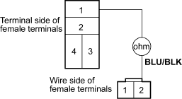
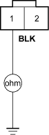
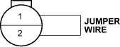
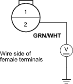

- Disconnect the radiator fan motor 2P connector.
- Check for continuity between the No. 1 terminal of the radiator fan relay 4P socket and the No. 2 terminal of the radiator fan motor 2P connector.
RADIATOR FAN RELAY 4P SOCKET

RADIATOR FAN MOTOR 2P CONNECTOR
Is there continuity?
YES - Go to step 8.
NO - Repair open in the wire between the under-hood fuse/relay box and the radiator fan motor 2P connector terminal No. 2. 
- Check for continuity between the No. 1 terminal of the radiator fan motor 2P connector and body ground.
RADIATOR FAN MOTOR 2P CONNECTOR

Wire side of female terminals
Is there continuity?
YES - Replace the radiator fan motor.
NO - Check for an open in the wire between radiator fan motor 2P connector terminal No. 1 and body ground. If the wire is OK, check for a poor ground at G301.

- Reinstall the radiator fan relay.
- Disconnect the radiator fan switch 2P connector.
- Connect the No. 1 and No. 2 terminals, of the radiator fan switch 2P connector with a jumper wire.
RADIATOR FAN SWITCH 2P CONNECTOR

Wire side of female terminals
Does the radiator fan run?
YES - Replace the radiator fan switch.
NO - Go to step 12.
- Remove the jumper wire, and measure the voltage between the No. 2 terminal of the radiator fan switch connector and body ground.
RADIATOR FAN SWITCH 2P CONNECTOR

Is there battery voltage?
YES - Check for an open in the wire between radiator fan switch 2P connector terminal No. 1 and body ground. If the wire is OK, check for a poor ground at G301.
NO - Repair open in the wire between the radiator fan switch terminal No. 2 and the under-hood fuse/relay box.